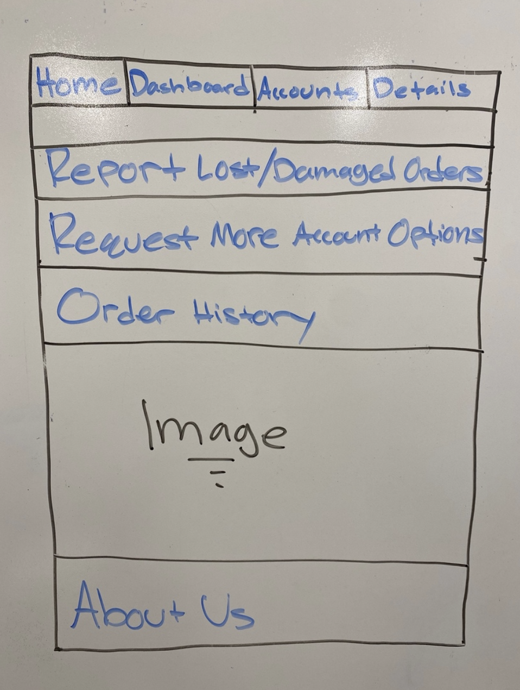
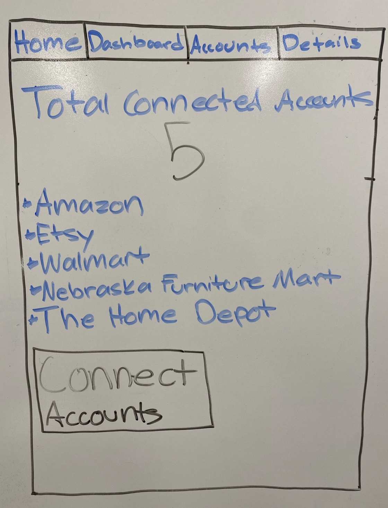
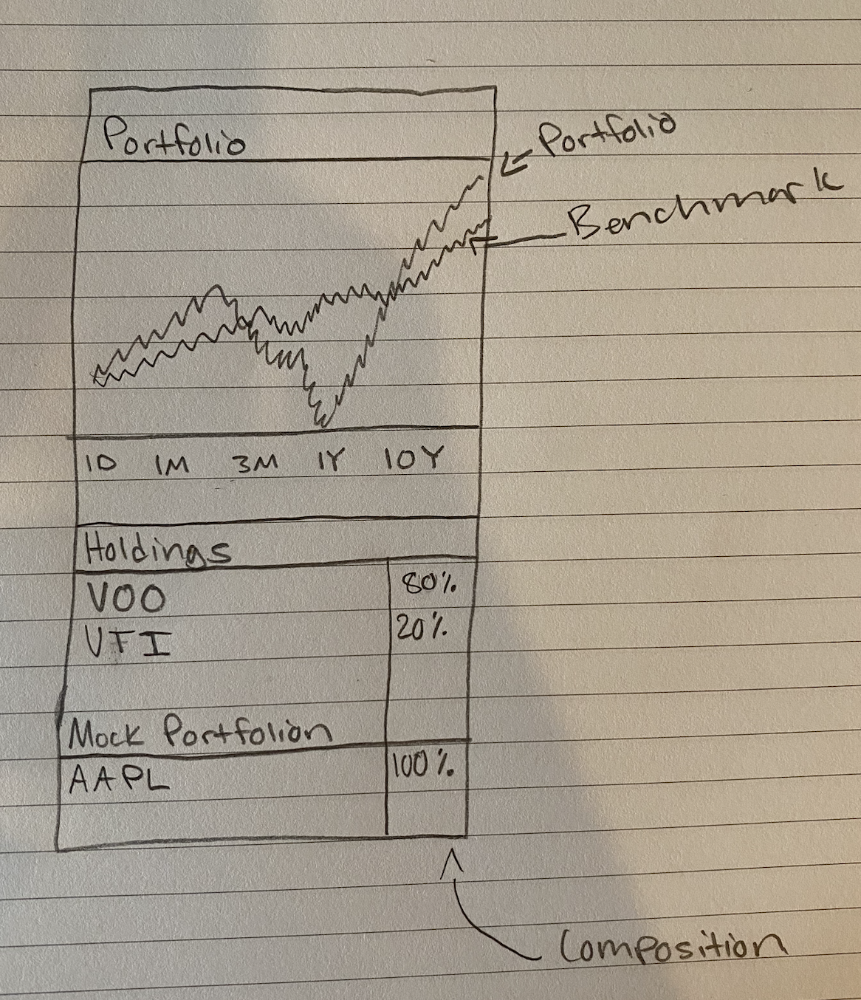
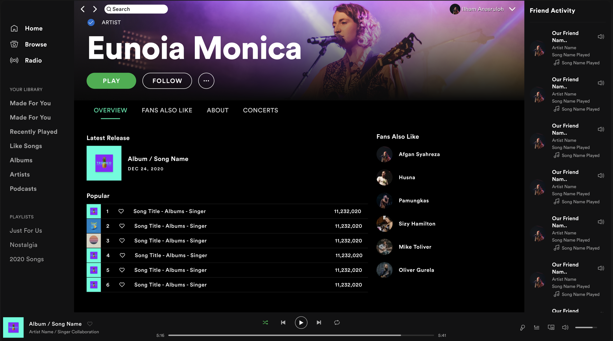
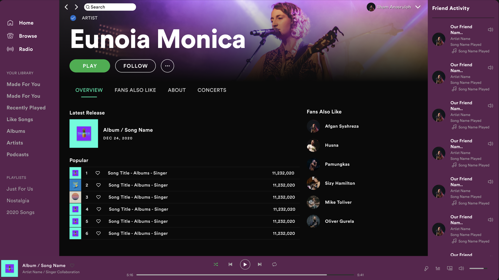
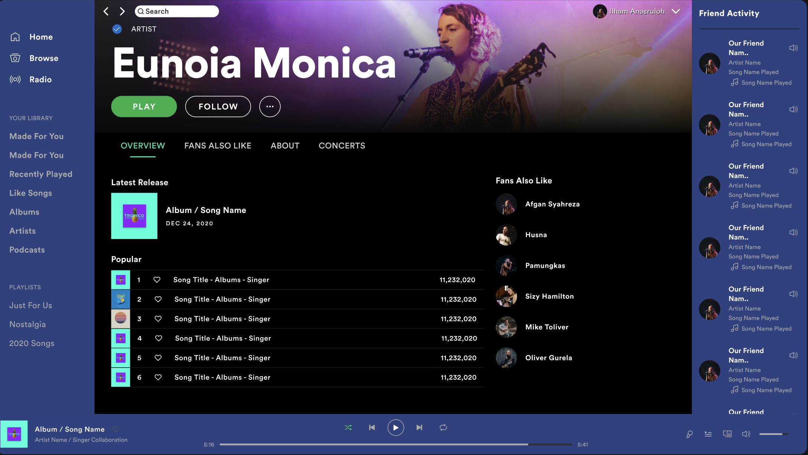

Hi. I'm Asim Ali!
Welcome to my portfolio! Everything is listed by assignment name along with the due date ordered by most recent at the top!
Welcome to my portfolio! Everything is listed by assignment name along with the due date ordered by most recent at the top!
I designed an application that consolidates order tracking/shipment data into one
site allowing users to better organize all their pending orders. I created this
because I found the idea to have plenty of potential and real world applicability.
I personally don't order many items from difference online places, however when
I do, I find annoyances in sifting through emails to not only find the tracking
numbers, but to then take those tracking numbers to their respective sites and
attempt to track my orders. From that experience, I understood that there must
exist a decent subset of the population that often deal with this issue, especially
for individuals who constantly online shop and this would drastically improve their
online shopping experiences. I also wrote a story which inspired the design about
Samantha who was a recent college graduate, moving to a new city, and purchasing her
first home. She needed to order furniture and a ton of other household items, but didn't
want to deal with tracking everything from all sorts of different sites as she already had
plenty on her plate. I think I would be great in developing this because I understand the
goal at hand and have an idea of how the user would like a simplistic yet practical UI.
I was the sole contributor to this project so I spent a lot of time thinking through
my own ideas, while also seeking feedback from many of my peers. The design originally
began with the idea of a mobile app as shown by the sketches down below, but I later
decided to lean more towards a web app as I figured it would be simpler for a user to
navigate from shopping sites to the my tracking site.


The prcoess of creating this design really came down to a few things. I knew I wanted this
to be simple, yet practical. Everything was built around these goals including fonts and
colors. I didn't want the color of the site to overblow the content which is why the site
mainly contains a combination of whites and grays. As shown below, this early iteration of
the mockup shows the idea I was going for, the colors, and initial font.
The next step in the process was to test how a user would interact with an early iteration of
my site. User testing is imporant as it provides feedback for the designer in real time. Below
is one of the first prototypes created allowing the user to interact with the design. In this
prototype, a user is able to navigate between all the main tabs in the header and observe key
parts such as how many orders they have enroute as well as how many connected accounts they have.
After the presentation of this prototype, I recieved plently of feedback that I then later improved.
A couple of key things that stood out in the feedback process was font selection in certain areas,
lack of information, and among other things the elimination of using buttons in multiple areas.
After that experience I was able to make all of those changes. This experience was also very similar
to the user tests I did. The procedures of the user tests involved navigating through the different pages,
adding a new account on the accounts page, and viewing that newly displayed account From the tests I found
and changed, font selection, removed labels that appeared like buttons, added more descriptive labeling
above items, displayed more detail on the accounts page, and lastly changed the way the account names appeared on
both the dashboard and accounts page. Below is what the mockup looked like after these 5 changes were implemented
Overall, throughout his design process, I learned a lot. Again, the main values I strived to have were simplicity
and practicality and I believe my UI is consistent with those values.
The UIUN Summit was an experience where we were able to represent a population of users to create an election site UI that better fit their needs. We found people with common and unique challenges and ensured that their experiences were not negated by those obstacles. In this summit, we were also able to meet with other teams who were representing a seperate population of users. In meeting with these teams, we brought our ideas to the table and negotiated what we believed would be required to increase the inclusivity of the site. The population we represented suffers from hand tremors. Hand tremors are a neurological condition in the hands that cause shaking movements. People that suffer from this deal with many challenges in their every day lives. What we learned they needed, what we fought for most, and our original recommendations came down to the fact that interfaces should have larger buttons to account for users struggling to click buttons of normal sizes. We kept our requirements simple, therfor not causing any significant changes throughout the negoiations. We had a fairly smooth process when negoiating which didn't require significant convicining. Obviously not everything can go everyone's way when negoiating so it is interesting to see how everyone generally prioritizes their wants and believes it is the most important thing and fortunately we didn't experience much trouble here. One of the biggest takeaways from the summit was how well people presented issues from their to each other. There were great ideas all around and they were interesting to see. I think negoiating in generall is a very imporant skill and being able to apply that to multiple areas is extremely important.
#FreeForm
This first video highlihgts three points which include research,
preparing your portfolio, and take a close look at the job requirements.
Researching is important in order to get a better understanding of the
company you're interviewing for which in turn allows you to be more
successful during the interview itself. In doing so, you're able to not only
answer the interviewer's questions, but ask some yourself. Preparing your portfolio
is important so that you adequetly showcase your skills and past work. Since you are
applying for a UI role, its critical this page looks nice. Lastly, observing the job requiements
is important because you're then able to undertand if your skills fit the needs the employer is looking for.
Knowing this can allow you to better undertand if you are aligned for this role or not
First Video Link
This second video mainly covers common interview question asked and how to go about answering them.
The first common question asked is "what is your favorite digital project and why?" The key to understanding
the premise of this question is the interviewer wants to know how well you can articulate and define
what you believe to be a good product. The second common question asked is "why do you want to work here?"
Like many place, this is a common question in general, but in answering its imporant to prioriize the wants
of the company. Many people explain why they want to work for a company, but neglect including why they
would be of value to the employer which is really what the interviewer would be looking for in this type of question.
The last commonly asked question is "can you walk me through one of your projects?" What is generally looked for in
a question like this is not detailing each of the steps one by one, but rather where you made your decisions and why,
what obstacles you ran into and how you overcame them, and how well you worked with others.
Second Video Link

#ApproximateAnalogy
Imagine a city's transportation system, where the majority
of the roads are narrow and winding, making it challenging
for large vehicles to navigate smoothly. Despite the
availability of advanced technology that could widen
the roads and streamline the traffic, the city continues
to function with its existing infrastructure. Implementing
changes would require a complete overhaul of the roads, affecting
numerous businesses and residents who have adapted to the current
layout. Even though a better design could enhance the overall
efficiency and convenience, the city remains reluctant to initiate
the transformation due to the massive disruptions it would cause.
This is important to remember in ones career as there are many implications
of the legacy problem. Many industries may resist change due to the potential
disruptions it could cause, even if a more efficient and effective alternative
exists. Understanding the challenges associated with legacy systems can help
individuals navigate corporate environments where there might be resistance
to adopting new technologies or methodologies.
Book Link
#WordJournal
The word I chose for this section is "empowerment." The reason
for choosing this word is that the passage highlights the need
for a shift in perspective and tools to empower designers and
developers to create accessible websites without requiring them
to become accessibility experts. Empowerment is essential to
remember in one's career because it emphasizes the importance
of creating inclusive and accessible products. By empowering
individuals with the knowledge and tools to make their designs
and developments accessible, we can ensure that everyone, regardless
of ability, can access and benefit from digital content. It also
encourages professionals to seek out and utilize tools that simplify
the process of incorporating accessibility into their work, leading
to a more inclusive and user-friendly digital environment.
Book Link
#WordJournal
I chose the word "iterative" because this word because the
passage emphasizes the importance of conducting small, early
tests and making incremental improvements throughout the development
process. Recognizing the iterative nature of testing and development
can be essential in one's career as an iterative approach can help
professionals in various industries to continuously refine and improve
their work. By conducting small tests early in the project, teams can
gather valuable insights and make necessary adjustments before major
issues arise. This approach can lead to more efficient development
cycles, reduced costs, and a higher likelihood of meeting user expectations.
Book Link
#WordJournal
I chose the word "personalization" because the passage emphasizes
the unique nature of each web user and the individualized reactions
they have to web design elements. The concept of personalization
is crucial to remember in one's career, particularly in user experience
and design. Understanding that user preferences
and behaviors are diverse and multifaceted can help professionals
tailor their designs to meet the specific needs of their target audience.
Book Link
#Tutorial
Tutorial on Creating a Great UX Portfolio:
1. Be consistent with font choices to maintain a clean look
2. Keep writing to a minimum
3. Shapes, depth of field, and device mockups can contribuute eye-catching dynamic look
4. Be reasonable & intentional with use of whitespace
5. Depending on the colors used in your portfolio, experiment with a lighter or darker background theme
Article Link
#WordJournal
I chose the word "adaptability" because the section discusses
how features like auto layout enable design components to adapt
to changes in content, such as different labels or the presence
of icons. It emphasizes the importance of design elements being
flexible and able to adjust based on varying conditions.
Adaptability is a crucial attribute for career success, as it enables
professionals to navigate constant change and innovation. It allows
individuals to respond effectively to evolving circumstances, whether
in design, project management, or problem-solving roles, leading to more
efficient and user-centric solutions.
Video Link
#WordJournal
I chose the word "emotion" because the entire section
emphasizes the importance of evoking emotions in your
audience when delivering a presentation or conveying information.
It highlights how emotions play a crucial role in effective
communication and how they can be harnessed through the use of
images and relatable, human-centered content. The concept of evoking
emotions is essential in a career, especially in fields that involve
communication, marketing, sales, leadership, or public speaking.
Article Link
The piece I chose to analyze is the "Old Glory" by Mark Di Suvero. Suvero
was born in Shanghai, China in 1933 & has created several pieces that resemble
Old Glory. I was shocked at this finding after looking him up to see
there existed several sculptures that eerily similar to the piece on
campus I've been observing all my life. Despite passing by hundreds if
not thousands of times, I finally had a reason to study this piece more closely.
Before finding its way to Lincoln, NE in 1987, Suvero spent 1986 constructing Old
Glory in Socrates Sculpture Park located in Long Island City, Queens, NY. He also
created Socrates Sculpture Park in the same year & the park still stands as
an outdoor museum aimed for artists to create & showcase their sculptures.
One point of analysis I will focus on is the color of Old Glory. Alone, the color
shouldn't stand out as anything too unique as its simply just a shade of red.
It wasn't until I again looked into the artist to then realize that not only
do the majority of his sculptures follow the same patterns, but are also almost
always red. I couldn't find a definitive reason as to why this is, but this
article
discusses varying meanings the color red can represent in artwork ranging from
strength, excitement, and vitality.
My next point of analysis will focus on visual direction, which generally refers
to the use of certain elements to guide the user's eyes in order to have them focus
on a specific area of the design. This
article
highlights this idea in further detail when it comes to web design and provides examples of both
obvious instances and not so obvious ones. I wanted to observe if this phenomenon was also present
when it came to physical sculptures like Suvero's. With the way the Old Glory sculpture is set up,
I find it difficult discovering if there is indeed an intended visual direction & I think it depends
on the angle in which you are viewing the piece. On one side, the focus point to you can be one thing
& on the opposite side it can be completely different. To me, when I view Old Glory, my eyes go
straight to the bottom half & the center of the sculpure. I believe this is due to me focusing my
attention on how the sculpture stands & its supportive base, as well as how the center supports the
top portion
My last point of analysis will cover the sculpture's placement. In art, where sculptures should
exist is commonly referred to as "placement." The setting in which a sculpture exists plays
a critical role in perception that viewers will have when observing the art. Firstly, Old Glory exists
in an outdoor open space surrounded by grass & trees. It's difficult to discuss Old Glory's placement
without acknowledging it's size. The biggest question I have is did Suvero decide on the size of sculpture
followed by where it would be placed or was the placement factored in first. There is a possibility that
it's also neither. This
article
goes into detail on the differences between indoor & outdoor sculptures & also describes how outdoor
sculpture in general was created with a more defined purpose.

The UI I decided to sketch is of an investment brokerage mobile app. Suvero's Old Glory & my sketch
don't look anything alike & in fact are really not related at all. With that being said,
the 3 points of analysis I chose when evaluating his sculpture is what motivated me to chose what I did
Color, visual direction, & placement are all factors that I took into account on my sketch. For color,
the visualization of the portfolio performance will include colors that aren't distracting, but draw
the user's eyes towards the graph. The graph also includes two line, one being the portfolio's performance
and the other being the compared benchamrk's. The usage of colors here will highlight either which is
outperforming at any given time.
I believe that throughout this process I was able to learn more about potential motivations behind specific
pieces of art & how to analyze those pieces. Needless to say, understanding an artist is extremely important
when trying to evaluate & understand a piece of art further.
#WordJournal
I chose the word "innovation" because this section emphasizes the
potential for novel and groundbreaking approaches to information
visualization and data exploration. It discusses the emergence of
new techniques and tools for handling and presenting complex data,
including dynamic queries, treemaps, fisheye views, and more. The
concept of innovation is important to remember in one's career,
particularly in fields related to information technology, data science,
and user interface design. Embracing innovation in these fields can lead
to the development of cutting-edge solutions that address the challenges
of managing and visualizing vast amounts of data. Staying open to new ideas,
tools, and approaches can help professionals stay at the forefront of their
respective industries and contribute to the advancement of technology and
user experience.
Article Link

#WordJournal
I chose the word "collaboration" because this section
emphasizes the importance of creating a collaborative
and feedback-friendly culture within a team. It highlights
the idea that feedback should not be a one-way process but
should involve active participation from team members and
leaders alike. The concept is important to remember in one's
career, especially in roles that involve teamwork, leadership,
or creative collaboration. Fostering a culture where feedback
is welcomed and valued can lead to a more productive and innovative
work environment. It promotes open communication, continuous
improvement, and the development of a supportive team dynamic.
Collaborative feedback processes can ultimately result in higher-quality
work and the growth and satisfaction of team members.
Article Link
#WordJournal
The word I chose is "clarity." I chose it because
this section emphasizes the importance of making
the home page of a website clear & concise in conveying
the site's purpose & the information users are likely to
seek. It highlights the idea that despite the complexity of
a website, the home page should prioritize clarity in adressing
the fundamental questions users have when they first visit the site
Book Link
#DirectedAnalysis
The video involved learning how to build a design system form
scratch. This is done mainly by using shared styles, grids, &
typography. Typography is discussed towards the beginning, followed
by the implementation of color, & the creation of color shades with
gradients.
Analyzing my screenshot below, the interface is Canva & tends to be
a good example of the guidelines in the video. The color shades on
the homepage are consistent with Figma's for one & have great contrast
with the overall appearance of the page. The logo in of itself has a great
mixture/blending of multiple colors, but keeps it easy & nice to view.
YouTube Link
#Tutorial
Tutorial on building a great design system:
1. Increase consistency with web design processes
2. Consider a small team with multiple specialties
3. Document whats been done in the past to allow for reusing
4. Increase the speed in which you can deploy changes to market
5. Continue envisioning future enhancements when building
Book Link
#WordJournal
The word I chose from my section is "time." The writer
goes into detail about how he values his time when it comes
to his life and that he doesn't make reactionary decisions
lightly. Having time to digest the decision in front of him
and contemplate his options is important to him. I think the
writer described this very well and time is something we all
generally don't fully understand the value of until later in
life when we feel we have less of it. Time is essential in
everything and learning how to manage it well is important
for all careers. Understanding that you have a finite amount
of it is critical.
Book Link

A. The spotify app has a main theme of black & green,
with green fitting the harmonious combination of blue & yello
B. Immediately with the black background it provides a soothing
theme which is great when opening up a music app. The green adds
the hint of excitement necessary. I think this design was intentional
particularly on the desktop application as many users would likely turn
on soothing music or complementary music to go along with the work they're doing.
Recreated UI

Recreations
  I believe the most effective color scheme is either the original black or the blue I created. Spotify is already a well created UI & I think an effective color scheme is one in which the content remains the main focus with colors that aren't too distracting. The blue is also effective as it again, doesn't distract the user, but also maintains an asthetically pleasing view.
I was able to change the color of the UI in multiple ways while also keeping the simplicity of the Spotify experience in tact. If something isn't broken, not breaking it is important. The differing color schemes are able to represent users in different ways and different moods. Since all music has a vibe and tone its important to represent that in the user experience of the app.
#WordJournal
My word choice for the section I chose is "courier."
The section described how in order for color to be perceived,
there must exist the presence of natural or artificial light.
This relationship was uniquely described as the light being
the messenger and the color representing the message. This
imagery immediately made me think of a communication network
which led me to the work courier which is known commonly as
a messenger. As humans we tend to forget how we see color,
but being reminded that one can only see what fills the world
with beautiful such tones and vibrancy is only allowed with
the availability of light.
Book Link
#WordJournal
I chose the word "perception" because this section
discusses how a color's appearance and the psychological
message it conveys can vary based on its relationship to
adjacent colors, its intensity, and its value. It highlights
how our perception of color is influenced by context and
the qualities of the color itself. The concept is important
to remember in a career related to design, marketing, or any
field where color plays a role. Understanding how color perception
works allows professionals to make informed decisions about color
choices in various contexts. Whether it's designing a brand identity,
creating marketing materials, or selecting colors for a user interface,
considering how colors are perceived can greatly impact the effectiveness
and message conveyed by the design.
Book Link
#WordJournal
I chose the word "adaptability" because this section
highlights the importance of being adaptable and open
to different cultural perspectives and approaches, even
when they may initially seem frustrating or unfamiliar.
The author discusses how they initially struggled with
the Japanese concept of "case-by-case" decision-making
but later came to appreciate the wisdom of considering
context and circumstance. The concept of adaptability
and cultural sensitivity is crucial to remember in one's
career, especially in a globalized world or when working
with diverse teams and clients. Being open to different
approaches, perspectives, and ways of doing things can
lead to better collaboration and problem-solving. It's
a reminder that there may not be one universal solution
or approach, and sometimes, what seems like a "cop-out"
or "it depends" can be a wise and contextually appropriate
decision. Embracing adaptability and cultural understanding
can enhance both personal and professional relationships and
lead to more successful outcomes.
Book Link
#WordJournal
I chose the word "simplicity" because this section
highlights the disconnect between how web designers
often expect users to interact with websites (carefully
reading and navigating every page) and the reality of
how users actually behave (quickly scanning and clicking).
The concept is important to remember in your career, especially
in fields like web design and user experience, because it
emphasizes the need for simplicity and user-friendliness
in design. Understanding how users typically behave online
and designing with that behavior in mind can lead to more
effective and user-centered designs. Simplifying navigation,
making content easily scannable, and ensuring that the most
important information is readily accessible can improve the
overall user experience and the success of websites and
digital products.
Book Link
#WordJournal
I chose the word "integration" because this section discusses
the integration of emotion into the existing models of action
and processing in design. It emphasizes how emotions play a
significant role in the various stages of user interaction and
how they are intertwined with the stages of action, processing,
and evaluation. The concept is important to remember in one's
career because it highlights the holistic nature of user experience
design. Understanding the interplay between emotion and different
stages of interaction can lead to more user-centered and emotionally
resonant designs. Recognizing that emotions are not isolated but are
integrated into the entire user experience can result in products and
services that better meet user needs and desires, ultimately leading
to more successful and impactful design outcomes.
Book Link
#WordJournal
I chose the word "evolution" because this section discusses
the evolution of design concepts, particularly the shift from
a focus on affordances to signifiers. It highlights how the
field of design has evolved in its understanding of how users
interact with both physical and virtual objects. The concept
of this evolution is important to remember in one's career
because it emphasizes the dynamic nature of design principles.
Designers should be open to adapting their approaches as new
concepts and understandings emerge. The shift from affordances
to signifiers underscores the importance of clear communication
and signaling in design, particularly in the context of digital
and virtual interfaces. Staying open to evolving concepts and
methodologies is crucial for remaining effective and relevant
in the field of design.
Book Link
Ornare nulla proin odio consequat sapien vestibulum ipsum.